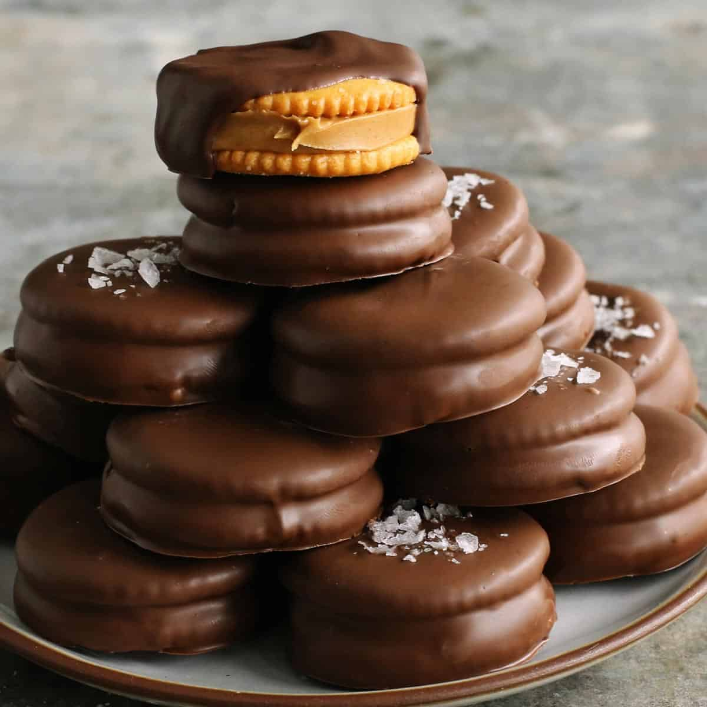

Chocolate Coated Peanut Butter Crackers

Description
Peanut butter-filled crackers dipped in chocolate and decorated with candy
sprinkles are a decadent treat to have on hand. Store cookies between layers of
waxed paper in cool, dry place, or in the refrigerator. These freeze well.
Ingredients
- ¾ cup creamy or chunky peanut butter
- 2 pounds chocolate almond bark, broken
into pieces
- 80 buttery round crackers (such as Ritz®)
- 2 ¼ ounces colored candy sprinkles
(Optional)
Steps
- Spread approximately 1 teaspoon peanut butter onto each cracker half. Press
peanut butter sides together to form 40 peanut butter-filled sandwich cookies.
- Melt almond bark in the top of a double boiler over hot, but not boiling, water.
Reduce heat and keep melted chocolate in top of double boiler over simmering
water.
- Place coated cookies onto waxed paper and immediately sprinkle with candy
sprinkles so they adhere to the melted chocolate.
- Place cookies in the refrigerator until chocolate has set, about 15 minutes.
Return Homepage